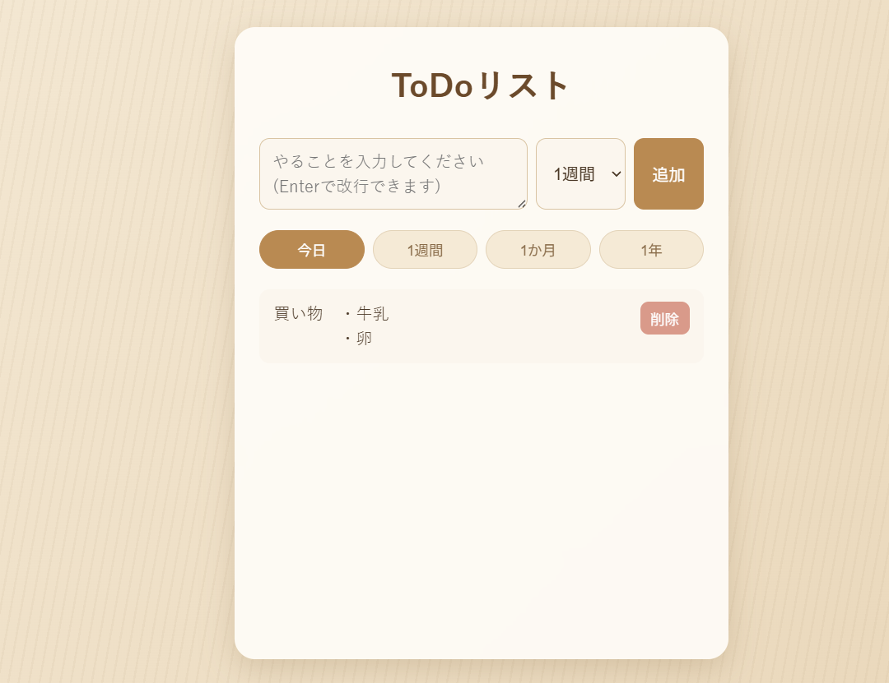
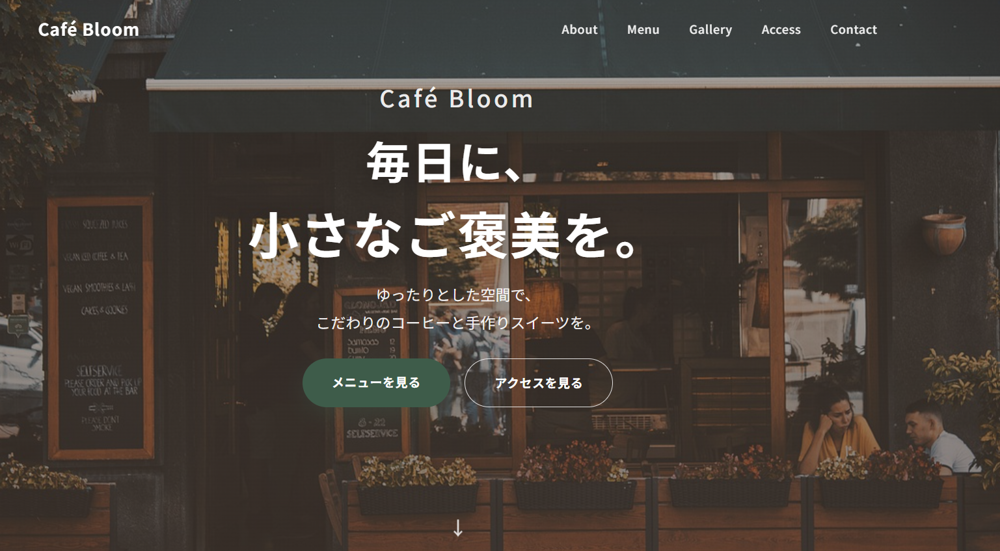
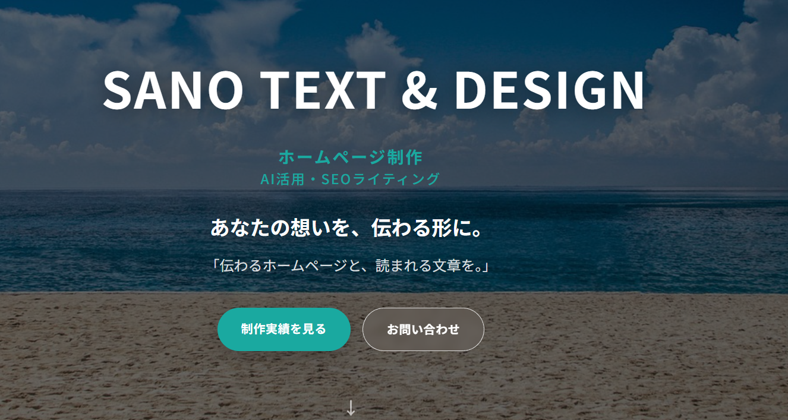

SANO TEXT & DESIGN
ホームページ制作 AI活用・SEOライティング
あなたの想いを、伝わる形に。
「伝わるホームページと、読まれる文章を。」
自己紹介
About Me
はじめまして。
SANO TEXT & DESIGN の Makiko Sanoです。
Claude CodeやChatGPTなどのAIを活用し、
ホームページ制作やSEOライティングを行っています。
お客様の想いや目的を丁寧に伺い、
「伝わるデザイン」と「読みやすい文章」を大切に制作しています。
一つひとつのご依頼に誠実に向き合い、
安心してご相談いただけるパートナーを目指しています。
対応できる仕事
Services
ホームページ制作
お店やサービス紹介など、目的に合わせたホームページを制作します。
ランディングページ制作
商品やサービスの魅力が伝わる、1ページ完結のLPを制作します。
HTML・CSS・JavaScript制作
コーディングによる、動きのあるWebページ制作に対応します。
AIを活用したWeb制作
Claude CodeやChatGPTを活用し、効率よく高品質な制作を行います。
SEO記事作成
検索結果で見つけてもらいやすい、SEOを意識した記事を作成します。
ブログ・note記事作成
読みやすく分かりやすい、ブログやnote向けの記事を作成します。
制作実績
Works

ToDoアプリ
HTML・CSS・JavaScriptで制作した、タスク管理アプリです。 スマートフォン表示にも対応しています。
サイトを見る→
Café Bloom
HTML・CSS・JavaScriptを用いて制作した架空のカフェ紹介サイトです。
レスポンシブ対応を行い、落ち着いたデザインを意識しました。

ポートフォリオサイト
現在ご覧いただいているこのサイトです。 AIを活用しながら、自身で構成からコーディングまで行いました。
サイトを見る→AIチャットアプリ（制作中）
AIチャットアプリ、公開予定です。 随時更新していきます。
使用できるツール
Tools
Claude Code
ChatGPT
HTML
CSS
JavaScript
GitHub
GitHub Pages
お問い合わせ
Contact
ご依頼・ご質問などございましたら、クラウドワークスのメッセージより
お気軽にお問い合わせください。
初心者ではありますが、誠実に対応させていただきます。